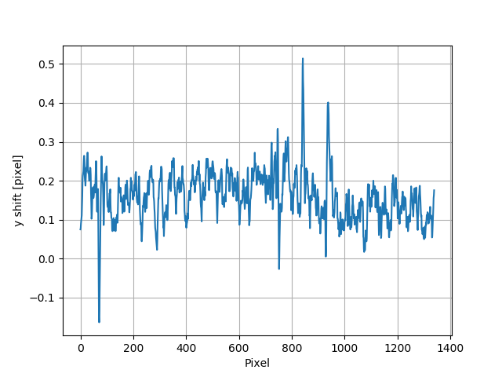

Examples
Say something here…
Plane mirror measurement with reference beam
In this example, we would like to show that how to use the XSS technique with reference beam to measure the plane mirror.
This example basically extracts from [HuXSSJSRpaper].
imstack_sam = Imagestack(sam_folder, ROI_sam)
imstack_ref = Imagestack(ref_folder, ROI_ref)
imstack_ref.flip = 'x'
track_XSS = Tracking(imstack_sam, imstack_ref)
track_XSS.dimension = '2D'
track_XSS.scandim = 'x'
track_XSS.dist = 833. # [mm]
track_XSS.scanstep = 1.0 # [um]
track_XSS.pixsize = 1.07 # [um]
Note that we set flip attribute to the reference image stack.
This is due to the fact that the reflected images after a mirror
flipped the incident beam. So, in order to be able to track the
shift of speckle patterns, we flip the reference images in the
reference image stack.
We only did x scan in this example, so the scandim of the
Tracking class is ‘x’. We do
2D data analysis, the dimension is set to be ‘2D’.
Before we do the speckle pattern tracking, another thing we need to
do is to align the speckle patterns from the two image stacks. It is
particularly needed when the test optic is a mirror.
We use collimate() function to do
the alignment.
track_XSS.collimate(10, 200)
After that, the speckle patterns from both image stacks are aligned and ready to be tracked.
edge_x = 0
edge_y = 30
edge_z = [15, 30]
width = 100
pad_xy = 30
After setting the initial parameters for the speckle patter tracking, we use either single-core version or multi-core version of the method used for the XSS technique with reference beam to obtain the speckle pattern shifts. Since the scan direction is along ‘x’, then edge_x is 0. Also, the edge_z is not symmetrical.
track_XSS.XSS_withrefer(edge_x, edge_y, edge_z, width, pad_xy, normalize=True, display=False)
Or
track_XSS.XSS_withrefer_multi(edge_x, edge_y, edge_z, width, pad_xy, cpu_no=16, normalize=True)
Note that we did normalization for the stiched images in this example.
The shift in ‘x’ direction looks like

Since we only scanned in the horizontal (x) direction, the delayX is only
stored in the track_XSS class. No track_XSS.delayY is available.
However, we do store the tracked value in another direction in the
Tracking class.
In this example, the shift in ‘y’ direction is stored in track_XSS._delayY.
It looks like

Since the tested mirror is an ultra-smooth plane mirror, the speckle shift in y direction should be very small. If we extract a central horizontal line from the 2D map of Y shift, we can see a tilted straight line

This indicate that the mirror is not perfectly parallel with the reference incident beam. The raw images need to be rotated and carefully aligned. According to the paper, the rotation angle is calculated to be around -0.275 degrees.
We can use rotate() function
to do the rotation.
rotateang = -0.275 # [degree]
imstack_sam.rotate(rotateang)
After the rotation, the edge of the raw images is non-physical. For example,
if we print out imstack_sam.data, we will see
print(imstack_sam.data)
array([[[0., 0., 0., ..., 0., 0., 0.],
[0., 0., 0., ..., 0., 0., 0.],
[0., 0., 0., ..., 0., 0., 0.],
...,
[0., 0., 0., ..., 0., 0., 0.],
[0., 0., 0., ..., 0., 0., 0.],
[0., 0., 0., ..., 0., 0., 0.]],
[[0., 0., 0., ..., 0., 0., 0.],
[0., 0., 0., ..., 0., 0., 0.],
[0., 0., 0., ..., 0., 0., 0.],
...,
[0., 0., 0., ..., 0., 0., 0.],
[0., 0., 0., ..., 0., 0., 0.],
[0., 0., 0., ..., 0., 0., 0.]],
[[0., 0., 0., ..., 0., 0., 0.],
[0., 0., 0., ..., 0., 0., 0.],
[0., 0., 0., ..., 0., 0., 0.],
...,
[0., 0., 0., ..., 0., 0., 0.],
[0., 0., 0., ..., 0., 0., 0.],
[0., 0., 0., ..., 0., 0., 0.]],
...,
[[0., 0., 0., ..., 0., 0., 0.],
[0., 0., 0., ..., 0., 0., 0.],
[0., 0., 0., ..., 0., 0., 0.],
...,
[0., 0., 0., ..., 0., 0., 0.],
[0., 0., 0., ..., 0., 0., 0.],
[0., 0., 0., ..., 0., 0., 0.]],
[[0., 0., 0., ..., 0., 0., 0.],
[0., 0., 0., ..., 0., 0., 0.],
[0., 0., 0., ..., 0., 0., 0.],
...,
[0., 0., 0., ..., 0., 0., 0.],
[0., 0., 0., ..., 0., 0., 0.],
[0., 0., 0., ..., 0., 0., 0.]],
[[0., 0., 0., ..., 0., 0., 0.],
[0., 0., 0., ..., 0., 0., 0.],
[0., 0., 0., ..., 0., 0., 0.],
...,
[0., 0., 0., ..., 0., 0., 0.],
[0., 0., 0., ..., 0., 0., 0.],
[0., 0., 0., ..., 0., 0., 0.]]])
As a result, we need to cut the edge of the rotated images.
cut = 20
imstack_sam.data = imstack_sam.data[:,cut:-cut, cut:-cut]
imstack_ref.data = imstack_ref.data[:,cut:-cut, cut:-cut]
After that, we redefine the track_XSS class and do the same operations
as before, using either single-core version or multi-core version of
the XSS tracking method, we have the following tracked shift in `y`
direction.

We can also extract the central line
{kind=link}
The tracked speckle pattern shift in ‘y’ direction has been properly corrected. We also have the tracked shift in ‘x’ direction.

Besides, the slope error in ‘x’ direction has been stored in the slopeX of
track_XSS class.
Hu, L., Wang, H., Fox, O., & Sawhney, K. (2022). Two-dimensional speckle technique for slope error measurements of weakly focusing reflective X-ray optics. J. Synchrotron Rad. 29(6). https://doi.org/10.1107/S160057752200916X
Measurement of the wavefront local curvature after a plane mirror
In this example, we will use the self-reference XSS technique to measure the local curvature of the wavefront after a plane mirror. Then we will show that the fine structures appeared on the intensity image correspond to the lcoal curvature map.
This example is extracted from [HuStripeOEpaper].
After the general settings of the image stack imstack and the
Tracking class track_XSS,
ROI = [180, 1980, 690, 1270] # [y_start, y_end, x_start, x_end]
imstack = Imagestack(folderName, ROI)
track_XSS = Tracking(imstack)
track_XSS.dimension = '2D'
track_XSS.scandim = 'x'
track_XSS.dist = 1705.0 #[mm]
track_XSS.pixsize = 3.0 #[um]
track_XSS.scanstep = 1.0 #[um]
we call XSS_self() or
XSS_self_multi() function
to process the data acquired using
self-reference XSS technique.
edge_x = 0
edge_y = 10
edge_z = 10
nstep = 2
width = 30
pad_xy = 10
normalize = True
#track_XSS.XSS_self(edge_x, edge_y, edge_z, nstep, width, pad_xy, normalize, display=True)
cpu_no = 16
track_XSS.XSS_self_multi(edge_x, edge_y, edge_z, nstep, width, pad_xy, cpu_no, normalize)
For this technique, the wavefront local curvature is the quantity directly reconstructed. We show the 2D map of it. The 2D map generated from the function is the local curvature of the wavefront on the detector plane.

The far-field intensity images are also acquired. We read them and do the average.
The image stack data are stored in the data attribute of the
spexwavepy.imstackfun.Imagestack class. We do the average on data.
Then we show the intensity image.
imstack2 = Imagestack(flatFolder, ROI)
imstack2.read_data()
ffimage = np.mean(imstack2.data, axis=0)
{kind=link}
From the two images shown in the above, we can find that those structures in the intensity image can be related to the structures appeared in the local curvature 2D map.
Hu, L., Wang, H., Sutter, J., & Sawhney, K. (2021). Investigation of the stripe patterns from X-ray reflection optics. Opt. Express 29, 4270-4286 https://doi.org/10.1364/OE.417030
Mirror slope error curve (1D) reconstructed from the dowmstream setup
A curved mirror is measured in this example. The diffuser is placed downstream of the mirror.

Because the curved mirror has no available reference beam, we use the self-reference XSS technique for the measurement. It is easy to obtain the 1D curve of the wavefront curvature.
Let’s check the raw data image first.
ShowImage = True
im_sam = read_one(folderName + 'ipp_292770_1.TIF', ShowImage=ShowImage)
{kind=link}
To obtain the 1D local wavefront curvature curve, we choose a small stripe of around 150 pixels in width, that is around 1mm wide.
ROI = [338, 643, 675, 825] #[y_start, y_end, x_start, x_end]
imstack = Imagestack(folderName, ROI)
track_XSS = Tracking(imstack)
track_XSS.dimension = '1D'
track_XSS.scandim = 'y'
track_XSS.mempos = 'downstream'
track_XSS.dist = 1790.0 #[mm]
track_XSS.pixsize = 6.45 #[um]
track_XSS.scanstep = 0.25 #[um]
edge_x = 15
edge_y = 0
edge_z = [5, 30]
nstep = 2
track_XSS.XSS_self(edge_x, edge_y, edge_z, nstep, display=True)
After setting up the Imagestack
class imstack and Tracking class
track_XSS and the related parameters, we have the wavefront
curvature curve at the detector plane track_XSS.curvY.
{kind=link}
In order to compare the at-wavelength measurement with the off-line NOM measurement, we need to project the wavefront at the detector plane back to the mirror surface. To do that, we need the following iterative algorithm.
The main idea of the following iterative algorithm is very similar to [SebastienGrating].
Two relations are used to devise the iterative algorithm. First, the slope of the mirror can be calculated as
where \(Y_{det}\) is the detector coordinate, \(d\) is the distance between the mirror and the detector plane. \(x\) and \(y\) are the mirror coordinate.
Second, the slope of the mirror is also the half of the wavefront slope. The wavefront slope can be calculated by the measured local curvature. If we integrate the mirror slope, we can have the mirror height, which is also \(y\) coordinate of the mirror.
Among the above equations, the mirror slope is measured quantity and is already known, the detector coordinate \(Y_{det}\) is also known, so is the distance \(d\).
We use the first equation to calculate mirror corrdinate \(x\), the second equation to calculate \(y\). We do it iteratively. In the end, both \(x\) and \(y\) will converge.
######### Iterative algorithm for donwstream case
iy = track_XSS.delayY
loccurv_y = track_XSS.curvY
theta = 3.7e-3 #[rad], pitch angle
mirror_L = 0.10 #[m], mirror length
dist_mc2det = 2.925 #[m]
D = dist_mc2det + 0.5 * mirror_L * np.cos(theta) #[m]
pixsize = track_XSS.pixsize
loccurvs = 0.5 * np.flip(loccurv_y)
detPos = np.arange(0, len(loccurvs)) * pixsize * 1.e-6 #[m]
SloErr = scipy.integrate.cumtrapz(loccurvs, detPos) #[rad]
SloErr = np.concatenate((np.array([0.]), SloErr)) #[rad]
#Inc_corr = np.linspace(-0.5*0.08*theta/41., 0.5*0.08*theta/41, len(SloErr))
#SloErr -= Inc_corr
x_init = np.linspace(0, mirror_L, len(SloErr)) #[m]
y_init = scipy.integrate.cumtrapz(SloErr*0.+theta, x_init) #[m]
y_init = np.concatenate((np.array([0.]), y_init)) #[m]
Y_det = y_init + 2 * (SloErr+theta) * (D-x_init)
Y_det = Y_det[0] + detPos
y_init2 = Y_det - 2 * (SloErr+theta) * (D-x_init)
x = copy.deepcopy(x_init)
y = copy.deepcopy(y_init)
for i in range(50):
y_prev = copy.deepcopy(y)
x_prev = copy.deepcopy(x)
x = D - (Y_det - y) / (2 * (SloErr + theta)) #[m]
#sys.exit(0)
y = scipy.integrate.cumtrapz(SloErr+theta, x) #[m]
y = np.concatenate((np.array([0.]), y)) #[m]
y_after = copy.deepcopy(y)
x_after = copy.deepcopy(x)
if i>0:
#plt.plot(x*1.e3, s*1.e6)
print("Iteration time: " + str(i+1))
print(np.sqrt(np.sum((y_prev-y_after)**2)))
print(np.sqrt(np.sum((x_prev-x_after)**2)))
#########
After that, we fit the result with the elliptical mirror shape.
######### Fitting
p = 46. #[m]
q = 0.4 #[m]
theta = 3.e-3 #[rad]
popt, pcov = scipy.optimize.curve_fit(EllipseSlope, x, SloErr, bounds=([p-1, 0., theta-0.3e-3], [p+1, 1., theta+0.3e-3]))
SloFit = EllipseSlope(x, popt[0], popt[1], popt[2])
SloRes = SloErr - SloFit
#########
We plot the measured on-line slope error and the off-line slope error together.
######### Exel data reading
import pandas
exel_folder = currentfolder + "/NOM_data.xlsx"
data_Fram = pandas.read_excel(exel_folder)
data_array = np.array(data_Fram)
x_lane1 = data_array[2:901, 1]
slo_lane1 = data_array[2:901, 2]
sloErr_lane1 = data_array[2:901, 3]
x_lane2 = data_array[2:901, 5]
slo_lane2 = data_array[2:901, 6]
sloErr_lane2 = data_array[2:901, 7]
x_lane3 = data_array[2:901, 9]
slo_lane3 = data_array[2:901, 10]
sloErr_lane3 = data_array[2:901, 11]
plt.figure()
plt.plot(x*1.e3-41, np.flip(-SloRes)*1.e6, label='At-wavelength measurement')
plt.plot(x_lane3, sloErr_lane3, label='Off-line measurement')
plt.xlabel('Mirror length [mm]')
plt.ylabel('Slope error [' + r'$\mu$' + 'rad]')
plt.legend()
#########
{kind=link}
We can also check the fitted parameters of the elliptical mirror.
print(popt)
[4.57354460e+01 3.70107898e-01 3.07919456e-03]
The fitted p is 45.735 m, q is 0.37 m, \(\theta\) is 3.08 mrad.
Note
The initial value theta, D can be fine adjusted
to match the off-line NOM data.
S. Berujon, and E. Ziegler, Grating-based at-wavelength metrology of hard x-ray reflective optics Opt. Lett. 37, 4464-4466 (2012). https://doi.org/10.1364/OL.37.004464
Comparison between self-reference XSS technique and self-reference XST technique
In this example, we will compare the 1D self-reference XSS technique and the 1D self-reference XST technique at first. The optic we used is a plane mirror. Similar results has been published from [HuXSTOEPaperFast].
The plane mirror speckle data is the same as in Plane mirror measurement with reference beam, and we only use the data with mirror in the beam.
ROI = [600, 1600, 740, 2040]
A width of around 1mm is chosen for the 1D data analysis.

Next let’s use the self-reference XSS technique at first.
imstack = Imagestack(sam_folderX, ROI)
track_XSS = Tracking(imstack)
track_XSS.dimension = '1D'
track_XSS.scandim = 'x'
track_XSS.dist = 833. # [mm]
track_XSS.scanstep = 1.0 # [um]
track_XSS.pixsize = 1.07 # [um]
edge_x = 10
edge_y = 10
edge_z = 10
nstep = 2
track_XSS.XSS_self(edge_x, edge_y, edge_z, nstep, display=False, normalize=True)
After that, the track_XSS will return the wavefront local curvature in curv_X.
We know that the wavefront local curvatur can also be obrained using the
self-reference XST technique.
imstack_1 = Imagestack(data_folder, ROI)
imstack_1.fnum = 1
imstack_1.fstart = 0
imstack_2 = Imagestack(data_folder, ROI)
imstack_2.fnum = 1
imstack_2.fstart = 5
track_XST = Tracking(imstack_1, imstack_2)
track_XST.dimension = '1D'
track_XST.scandim = 'x'
track_XST.dist = 833. # [mm]
track_XST.scanstep = 5.0 # [um]
track_XST.pixsize = 1.07 # [um]
Two images taken at two different diffuser positions are only needed for the
self-reference XST technique, we can choose any two images
form the scanned dataset. We choose the first (No. 0) image and the sixth (No. 5) image.
Thus, the scanstep is 5 \(\mu m\).
edge_x = [20, 20]
edge_y = 10
pad_x = [20, 20]
hw_xy = 15
pad_y = 10
track_XST.XST_self(edge_x, edge_y, pad_x, pad_y, hw_xy, display=False, normalize=True)
After setting proper parameters, we can call XST_self()
function to process the data.
We plot the wavefront curvature obtained from the two technqiues together, note that the way to calculate the wavefront curvature from the two techniques are different, please refer to Local curvature reconstruction.

Wavefront curvature obtained from XSS and XST techniques.
The results from the two techniques match with each other. Further, we can
plot the tracking coefficient also. The tracking coefficient is stored in
resX and/or resY parameters of Tracking
class.
{kind=link}

From the tracking coefficients we can find that the XSS technique in general have higher tracking coefficient than the conventional XST technique.
We can also compare 2D data prcossing of these two techniques.
track_XSS.dimension = '2D' #'1D'
edge_x = 10
edge_y = 10
edge_z = 10
nstep = 2
pad_xy = 10
hw_xy = 20
cpu_no = 16
#track_XSS.XSS_self(edge_x, edge_y, edge_z, nstep, hw_xy, pad_xy, display=True, normalize=True)
track_XSS.XSS_self_multi(edge_x, edge_y, edge_z, nstep, hw_xy, pad_xy, cpu_no, normalize=True)
For 2D case of self-reference XSS technique, the old parameters remain the same, added the new parameters that are specific for the 2D data processing case, we can have the following 2D local wavefront curvature map.
{kind=link}
Likewise, we can do the 2D data processing for self-reference XST technique. Unlike the XSS case, the parameters for 2D processing should be changed in order to have successful tracking result.
track_XST.dimension = '2D' #'1D'
edge_x = [20, 20]
edge_y = [20, 25]
pad_x = [20, 20]
hw_xy = 30
pad_y = [20, 25]
window = 60
cpu_no = 16
#track_XST.XST_self(edge_x, edge_y, pad_x, pad_y, hw_xy, window, display=True, normalize=True)
track_XST.XST_self_multi(edge_x, edge_y, pad_x, pad_y, hw_xy, window, cpu_no, normalize=True)
Note that sometimes the following warning information will occur,
Potential tracking failure, no subpixel registration:
This is because some subregion changed too much that the tracking fails. Ignore those warnings, we still have the following 2D wavefront map.

The wavefront curvature map from the self-reference XST technique has lower spatial resolution and accuracy compared to the self-reference XSS technique.
Hu, L., Wang, H., Fox, O., & Sawhney, K. (2022). Fast wavefront sensing for X-ray optics with an alternating speckle tracking technique. Opt. Exp., 30(18), 33259-33273. https://doi.org/10.1364/OE.460163
KB mirror alignment using self-reference XST technique
In this example we will show how to align KB mirror’s pitch angle (\(\theta\)) using the self-reference XST technique. This example is similar to Fig.5 in [HuXSTOEPaperFast2].
The basic idea is also described in the above paper. At the nominal angle \(\theta\), the local curvature is constant along the mirror length. However, if it deviates to the nominal value, the local curvature will change along the mirror length. The change of the local curvature can be assumed linealy to the mirror length coordinate.
Let’s first obtain the wavefront curvature for both HKB and VKB using the self-reference
XST technique. Note that for this technique, only one image is needed for each image stack,
thus, the parameter fnum is 1. In each folder, the two images are at two different
diffuser positions. The movement of the diffuser is 4 \(\mu m\).
###### HKB self-reference XST
ROI_HKB = [45, 545, 60, 330]
delayHKB_stack = np.zeros((13, 466))
curvYHKB_stack = np.zeros((13, 466))
for jc in range(1, 14, 1):
imstack_tmp_1 = Imagestack(folder_prefix_HKB+'theta' + str(jc) + '/', ROI_HKB)
imstack_tmp_1.fstart = 0
imstack_tmp_1.fnum = 1
imstack_tmp_2 = Imagestack(folder_prefix_HKB+'theta' + str(jc) + '/', ROI_HKB)
imstack_tmp_2.fstart = 1
imstack_tmp_2.fnum = 1
track_tmp = Tracking(imstack_tmp_1, imstack_tmp_2)
track_tmp.dimension = '1D'
track_tmp.scandim = 'y'
track_tmp.dist = 1650.0 # [mm]
track_tmp.scanstep = 4.0 # [um]
track_tmp.pixsize = 6.45 # [um]
edge_x = 10
edge_y = [5, 20]
pad_x = 10
pad_y = [5, 20]
hw_xy = 10
track_tmp.XST_self(edge_x, edge_y, pad_x, pad_y, hw_xy, display=False, normalize=True)
delayHKB_stack[jc-1] = track_tmp.delayY
curvYHKB_stack[jc-1] = track_tmp.curvY
##### VKB self-reference XST
ROI_HKB = [50, 540, 30, 350]
delayVKB_stack = np.zeros((13, 286))
curvYVKB_stack = np.zeros((13, 286))
for jc in range(1, 11, 1):
imstack_tmp_1 = Imagestack(folder_prefix_HKB+'theta' + str(jc) + '/', ROI_HKB)
imstack_tmp_1.fstart = 0
imstack_tmp_1.num = 1
imstack_tmp_2 = Imagestack(folder_prefix_HKB+'theta' + str(jc) + '/', ROI_HKB)
imstack_tmp_2.fstart = 1
imstack_tmp_2.num = 1
track_tmp = Tracking(imstack_tmp_1, imstack_tmp_2)
track_tmp.dimension = '1D'
track_tmp.scandim = 'x'
track_tmp.dist = 1650.0 # [mm]
track_tmp.scanstep = 4.0 # [um]
track_tmp.pixsize = 6.45 # [um]
edge_x = [20, 5]
edge_y = 10
pad_x = [20, 5]
pad_y = 10
hw_xy = 10
track_tmp.XST_self(edge_x, edge_y, pad_x, pad_y, hw_xy, display=False, normalize=True)
delayVKB_stack[jc-1] = track_tmp.delayX
curvYVKB_stack[jc-1] = track_tmp.curvX
We can plot the obtained local curvature.
{kind=link}
Local wavefront curvature of HKB mirror.
We can find that the data cloase to one end is abnormal due to the visible stains observed on the mirror surface, we cut that part.
{kind=link}
Local wavefront curvature of HKB mirror after cropping the abnormal data.
We can also plot the wavefron local curvature changed by the VKB mirror.

Local wavefront curvature of VKB mirror.
We do linear fitting for the measured local wavefront curvature data. From the following figure we can see clearly the linear relation predicted by the theory. The nominal angle \(\theta\) is at the position where the fitted slope is close to 0.

The fitted slope for the above measured curves.
Hu, L., Wang, H., Fox, O., & Sawhney, K. (2022). Fast wavefront sensing for X-ray optics with an alternating speckle tracking technique. Opt. Exp., 30(18), 33259-33273. https://doi.org/10.1364/OE.460163
Hartmann-like data processing scheme
We have also implemented a speckle-based data processing methods that resemble the conventional Hartmann-like data processing method. We will demonstrate it in this example.
ROI_sam = [540, 1570, 750, 1800]
ROI_ref = ROI_sam
Imstack_sam = Imagestack(, ROI_sam)
Imstack_ref = Imagestack(ref_folder, ROI_ref)
Imstack_sam.read_data()
Imstack_ref.read_data()
For this data processing mode, one reference and one sample image stack are needed. There will be only one image in each image stack.
print(Imstack_sam.data.shape)
print(Imstack_ref.data.shape)
(1, 1030, 1050)
(1, 1030, 1050)
For Hartmann-like data processing mode, we need to define the subregions used for pattern shift tracking. The subregion is a rectangular box. We need to define the centre and the size of each box.
x_cens = np.arange(50, 1050, 50)
y_cens = np.arange(60, 1000, 50)
size = 15
According to the implementation of the Hartmann-like method,
the real size for the subregion is \(2 \times size\) for both width and height.
We use Hartmann_mesh_show() function to show the subregions
defined for the Hartmann-like data processing method.
Note the coordinates of the boxes need to be expanded to 2D mesh grid when as the input of
the Hartmann_mesh_show() function.
from spexwavepy.corefun import Hartmann_mesh_show
X_cens, Y_cens = np.meshgrid(x_cens, y_cens)
Hartmann_mesh_show(Imstack_ref.data[0], X_cens, Y_cens, size)
plt.show()
The chosen rectangular boxes are shown in red in the following image.
{kind=link}
Like other data processing methods, we need to define the
Tracking class. Then we invoke
the Hartmann_XST() function
to obtain the speckle pattern shifts.
Track_Hartmann = Tracking(Imstack_sam, Imstack_ref)
pad = 20
Track_Hartmann.Hartmann_XST(X_cens, Y_cens, pad, size)
The calculated speckle patterns shifts are stored in Tracking.delayX and
Tracking.delayY.
plt.figure()
plt.imshow(Track_Hartmann.delayX, cmap='jet')
plt.figure()
plt.imshow(Track_Hartmann.delayY, cmap='jet')
plt.show()
{kind=link}
The above results resemble those in the Tutorial. However, the above results have worse spatial resolution.
Unlike the other data processing methods, for Hartmann-like method, we only keep speckle tracking shifts, the physical quantities such as wavefront slope and curvature are left to user to recover. For more detailed description of this method, please refer to the user guide.